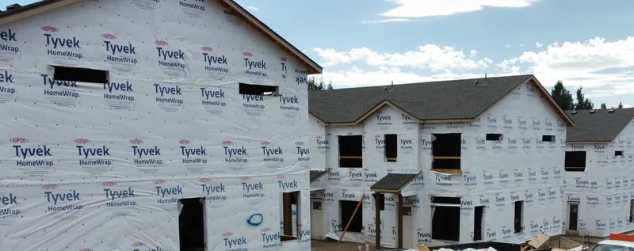

Other services in Knoxville, TN
Siding, windows and gutters in Knoxville
Rain hits the roof first, then runs down everything below it. We replace siding, windows, entry doors and gutters on Knoxville-area homes and build them to work with the roof above.

Rot on the outside of a house usually starts with water coming off the roof. A clogged gutter spills over and soaks the fascia. A downspout that ends at the corner splashes the bottom row of siding. A window with no flashing above it takes in whatever runs down the wall.
That's why a roofing company does this work. We look at a house from the ridge down and check the roof edge and the flashing whenever we price any of it. If the roof is near the end too, doing both together saves a second setup.

Siding
Siding goes up over fresh house wrap, with flashing around each window and door. Vinyl is the common choice around Knoxville. Fiber cement costs more and holds paint longer. Engineered wood looks like painted lap siding and weighs less. Roof and siding together usually costs less than two jobs.

Windows and doors
Replacement windows go in two ways: fitted inside the old frame, or a full tear-out down to the wall framing when the frame is soft. We look at each one and tell you which it needs. Entry doors come in fiberglass, steel or wood, already hung in their own frame.

Gutters
One-piece aluminum gutters in 5-inch or 6-inch, cut to the length of each eave and sized by the roof above them. Downspouts go where the water collects and turn it away from the foundation. Soft fascia gets replaced before a gutter hangs on it. Guards where trees hang over the roof.
Book a free estimate
Four boxes. We'll call you back to pick a time.
Rather talk? Call (865) 830-8126. Rather text? Send a photo.